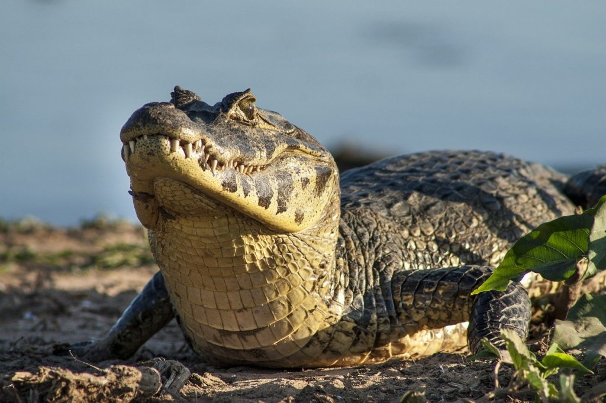
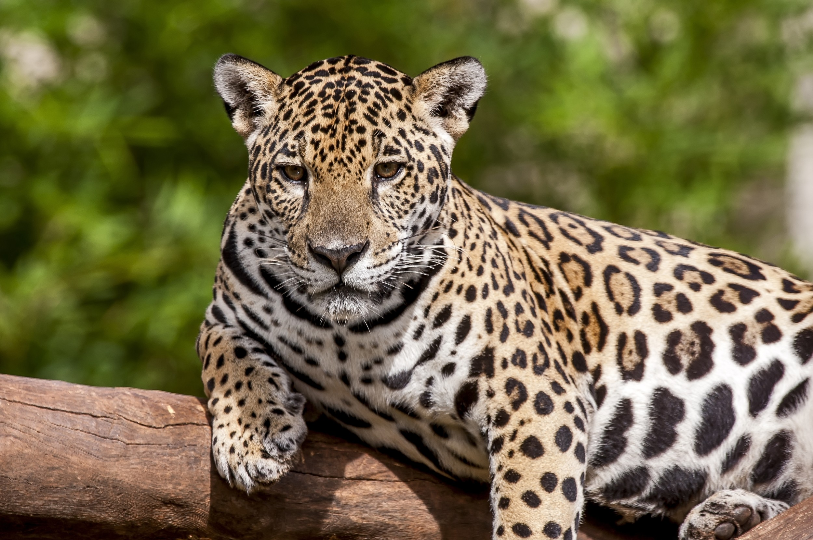
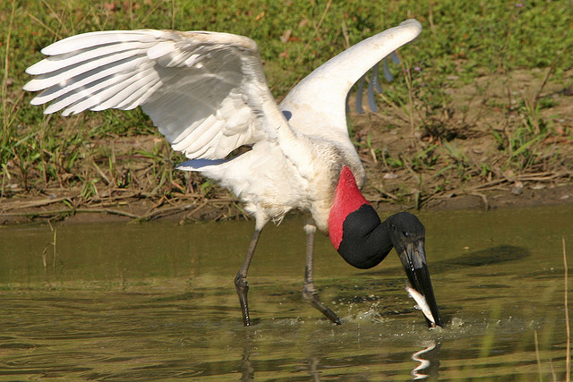

🐊 Jacaré-do-Pantanal
Nome científico: Caiman yacare
Habitat: Rios, lagoas, corixos e áreas alagadas do Pantanal.
Alimentação: Carnívoro (peixes, aves, moluscos e pequenos mamíferos).
Comprimento: 2 a 3 metros.
Peso: 40 a 90 kg.
Expectativa de vida: Até 50 anos.
Descrição
O jacaré-do-pantanal é um dos répteis mais conhecidos do Pantanal e pode ser encontrado em grandes grupos próximos a rios e lagoas. Possui uma mordida poderosa e excelente visão noturna, sendo um caçador eficiente. Apesar da aparência intimidadora, geralmente evita o contato com seres humanos. Sua presença é fundamental para o equilíbrio dos ecossistemas aquáticos da região.
Curiosidade
É considerado uma espécie-chave do Pantanal, ajudando no controle das populações de peixes e outros animais aquáticos.

🐆 Onça-pintada
Nome científico: Panthera onca
Habitat: Florestas, matas ciliares, Cerrado e Pantanal.
Alimentação: Carnívora (capivaras, jacarés, veados e outros vertebrados).
Comprimento: 1,1 a 1,9 metros (sem contar a cauda).
Peso: 56 a 120 kg, podendo ultrapassar 140 kg.
Altura: Cerca de 70 a 80 cm nos ombros.
Expectativa de vida: 12 a 15 anos na natureza.
Descrição
A onça-pintada é o maior felino das Américas e um dos principais símbolos da fauna brasileira. Seu corpo musculoso e sua mordida extremamente forte permitem que ela capture presas de grande porte. É um animal solitário, territorial e excelente nadador, sendo frequentemente observada nas áreas alagadas do Pantanal.
Curiosidade
A força de sua mordida está entre as maiores de todos os felinos do mundo, permitindo perfurar até mesmo cascos e crânios de suas presas.

🐦 Tuiuiú
Nome científico: Jabiru mycteria
Habitat: Áreas alagadas, lagoas e margens de rios do Pantanal.
Alimentação: Carnívoro (peixes, anfíbios, moluscos e pequenos répteis).
Altura: 1,20 a 1,40 metros.
Envergadura: Até 2,80 metros.
Peso: 4 a 8 kg.
Expectativa de vida: Até 30 anos.
Descrição
O tuiuiú é a ave símbolo do Pantanal e uma das maiores aves voadoras da América do Sul. Seu corpo branco, cabeça preta e faixa vermelha no pescoço o tornam facilmente reconhecível. Costuma construir ninhos enormes no topo das árvores, reutilizando-os por vários anos.
Curiosidade
Um único ninho de tuiuiú pode atingir mais de 1,5 metro de diâmetro e pesar centenas de quilos após anos de uso e ampliação pelo casal.